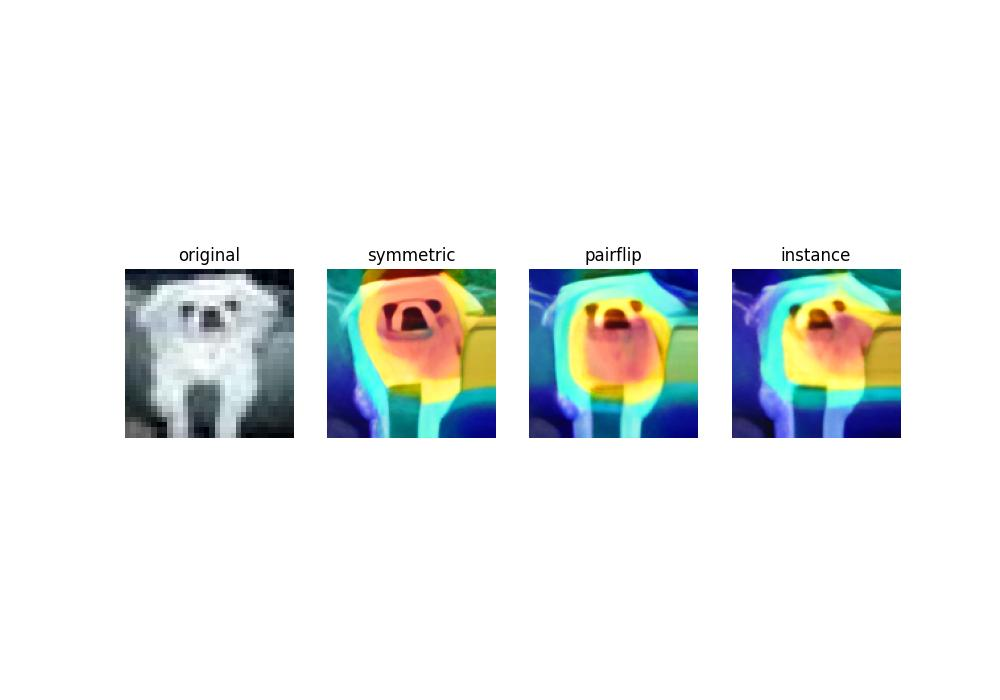

Visualize Model with GradCAM and Super-Resolution
Check how to visualize an Image Classification model with GradCAM, and make it clearer by Super-Resolution.

Visualization Results
1 Model creation
Firstly, I find model PES from github: Understanding and Improving Early Stopping for Learning with Noisy Labels (NeurIPS 2021)
Then, to make sure its correctness, I check the model following the README in its repo and rerun the training procedure with much smaller epoches (check this hyperparameter in the code, like the argparse part in config.py or train.py etc.).
Now I need to get my Grad-cam code and plug it into PES.
2 Learning GradCAM
I use this package: pytorch-grad-cam
Then I check how to GradCAM an image with my model and here’s how I do it:
# 1. Init model
model = resnet50(pretrained=True)
# 2. Set target layers (Check which layers to use from its repo)
# PES uses Resnet18 as its backbone. I check the model structure by:
print(model)
# Then I target at the last layer of my model, which is layer4[-1]:
target_layers = [model.layer4[-1]]
# 3. Create CAM object
cam = GradCAM(model=model, target_layers=target_layers, use_cuda=args.use_cuda)
# 4. Set target class to GradCAM
# Set the 281-th class to visualize:
targets = [ClassifierOutputTarget(281)]
# or Set the class that has highest score to visualize:
targets = None
# 5. Get your GradCAM
grayscale_cam = cam(input_tensor=input_tensor, targets=targets)
# 6. Load the image to visualize
rgb_img = Image.open(f"{path}") # your image path
images = transform_test(rgb_img).unsqueeze(0) # how you transform your image during training, see PES repo
images = images.cuda()
# 7. GradCAM on 1 image:
grayscale_cam = grayscale_cam[0, :]
visualization = show_cam_on_image(rgb_img, grayscale_cam, use_rgb=True)
# 8. Visualization:
input_images = asarray(rgb_img)
input_images = np.float32(input_images) / 255
visualization = show_cam_on_image(input_images, grayscale_cam, use_rgb=True)3 Make the GradCAM image clearer with Super-Resolution
The main thing to do is to find a SOTA Super-Resolution method that assist fast inference or evaluation on my image.
That’s why I use this model and its pretrained weights from github:
From Face to Natural Image: Learning Real Degradation for Blind Image Super-Resolution (ECCV 2022)
All I need to do is to change the path to the inference image with my image, and rerun the inference code.
Then the blurring image becomes clear.
4 Deploy all via Flask
I check out this repo and figure out how to write flask code.
React/Flask Starter App on Heroku
Here is a sample code to create a flask app on Server: 123.45.67.8:5005:
from flask import Flask, request, send_file
app = Flask(__name__) # 固定写法
app.config["UPLOAD_FOLDER"] = "xxx" #设置环境变量
@app.route("/predict", methods=["GET", "POST"])
def predict():
if request.method == "POST": # 接收传输的图片
image_file = request.files["file"]
file_path = os.path.join(app.config["UPLOAD_FOLDER"], image_file.filename)
image_file.save(file_path)
else:
file_path = request.args.get("path") # 接收其他客户端浏览器发送的请求
return gradcam(file_path)
if __name__ == "__main__":
# app.run() # 原工程的写法，默认只能本机访问
app.run(host="0.0.0.0", port=5005) # 使其他主机可以访问服务Then run python xxx.py to create flask app on server.
Now, you can call GradCAM and Super-Resolution on another machine through command line:
- Send your image to server and get the processed image
Here, -F is to send the original file and –output is to get the processed file sent back from server.
curl -X POST -F 'file=@imagepath' --output 'test.jpg' http://123.45.67.8:5005/predict- Send a request from web browser while image stored in the server
Note that predict corresponds to @app.route("/predict", methods=["GET", "POST"]).
http://123.45.67.8:5005/predict?path=imagepath5 Experiment Results
We conduct three experiments under symmetric, pairflip and instance noise scenarios.
| Method | Symmetric | Pairflip | Instance |
|---|---|---|---|
| PES | 84.44 | 85.71 | 83.66 |
6 Linux Tricks
In this section, I will introduce some linux tricks in my project.
6.1 How to copy a file to a remote server in Python?
import subprocess
p = subprocess.Popen(["scp", "my_file.txt", "username@server:path"])
sts = os.waitpid(p.pid, 0)6.2 How to Run SCP Without Password Prompt Interruption in Linux?
Try this if you wanna improve the speed of transferring the files.
ssh-keygen -t rsa -b 4096 -C "root@localhost"Then, it says Enter file in which to save the key (/root/.ssh/id_rsa):. Copy the saving path here(.ssh/) and check if the key id_rsa.pub is there.
ls -l .ssh/Finally, do this, remember to replace .ssh with your saving path.
cat .ssh/id_rsa.pub | ssh root@server2 'cat >> .ssh/authorized_keys'6.3 How to run linux command in python?
I need to move and save my file in python. Here’s how I do it:
import os
os.system("touch a.txt") # single command
os.system("touch a.txt && touch b.txt") # multiple commandOtherwise, save the commands to a .sh file and run it.
import os
os.system("save.sh")6.4 How to copy a file or directory in linux?
cp <existing file name> <new file name>
cp <file1> <file2> <target_directory_name>
cp -r <dir1> <dir2>7 Github Tricks
7.1 How to search efficiently?
I often find latest updates in my field like this:
deep learning stars:>10 forks:>10 language:python created:>2022-01-01 pushed:>2022-01-01Here, deep learning is the search tag.
8 References
# https://www.tutorialspoint.com/How-to-copy-a-file-to-a-remote-server-in-Python-using-SCP-or-SSH
# superweb999.com/article/356190.html #
# https://cloud.tencent.com/developer/article/1669557 #
# https://blog.theodo.com/2022/05/upgrade-pytorch-for-aws-sagemaker/ #
# https://www.thegeekdiary.com/how-to-run-scp-without-password-prompt-interruption-in-linux/ #
# https://flask.palletsprojects.com/en/2.2.x/patterns/fileuploads/
# https://blog.csdn.net/qq_27825451/article/details/102909772 #
# https://blog.csdn.net/xiojing825/article/details/78207862 #
# https://github.com/csxmli2016/ReDegNet
# https://learnku.com/server/wikis/36530 #
# https://www.csdn.net/tags/OtDaUg1sODA3MDMtYmxvZwO0O0OO0O0O.html #
# https://blog.duhbb.com/2022/03/29/local-web-access-by-frp-intranet-penetration/
# https://github.com/evmaki/ee461-react-flask-heroku
# https://www.freecodecamp.org/news/how-to-update-node-and-npm-to-the-latest-version/
# https://github.com/Nneji123/Serving-Machine-Learning-Models#serving-models-with-streamlit
# https://github.com/neelsomani/react-flask-heroku
# https://towardsdatascience.com/reactjs-python-flask-on-heroku-2a308272886a
# https://www.google.com/search?q=gunicorn+app:app&sxsrf=ALiCzsbTbNZ0bN6WspDglqqEscn7xPL9Mw:1668792432324&ei=cMB3Y8uwE9Pw4-EP8q6syAI&start=10&sa=N&ved=2ahUKEwjLqIehoLj7AhVT-DgGHXIXCykQ8NMDegQIAxAO
# https://www.geeksforgeeks.org/how-to-display-multiple-images-in-one-figure-correctly-in-matplotlib/